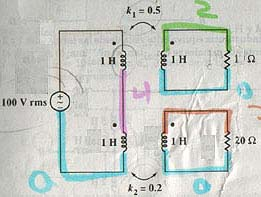

A07 AC analysis: Mutual inductances
Question.
Given the following circuit (I know it's ugly, ok!), find the power consumed in source and in the resistors. Radial frequency is 100 r/s.

Solution.
We will solve this problem using the latest ac() tool.
1) Label nodes and elements. Define variable containing circuit description. I used this description:
"e1,1,0,100*sqrt(2); l1,1,4,1; l2,4,0,1; l3,2,0,1; l4,3,0,1; r1,2,0,10; r2,3,0,20; m1,l1,l3,0.5; m2,l2,l4,0.2" àcir
Notice that the mutual inductance must be entered in H. Therefore, use the formula M=k*sqrt(L1*L2). Since all L's are 1H, k's values are the same that m's values. But this is only in this case. Notice also that the source value was entered as 100*sqrt(2) since Vmax is the value you must enter, and Vmax=Vrms*sqrt(2). Notice, finally, that all inductors were defined from dot node to no-dot node. This is necessary when you use mutual inductances.
Simulate this circuit using alternating current analysis.
sq\ac(cir,100)
Done
The program ac() has stored in variables the voltage in all nodes, the current in all elements and the complex power in all elements.. Remember that consumed rms power is the half of the real part of the complex power. Let's fir
Let's first ask for the consumed rms power in voltage source.
real(se1)/2
-1.10401
The negative sign means that the source is actually delivering power, instead of consuming it. Now, let's ask for the consumed rms power in resistors.
real(sr1)/2
0.842239
real(sr2)/2
0.261742
Answer: The answers obtained are the right ones.